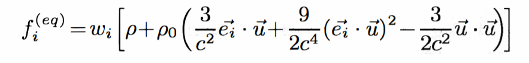
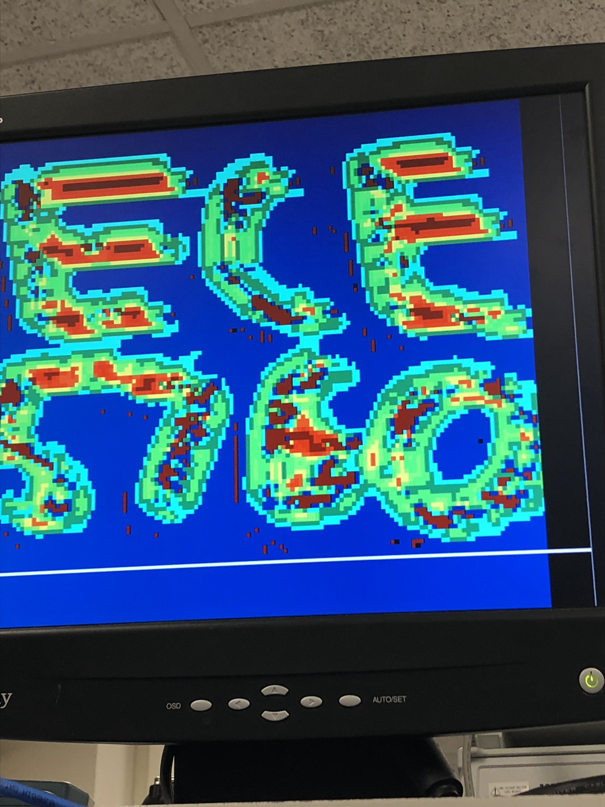

This goal of this project is to create an interactive fluid dynamics simulation using the Lattice Boltzmann equation in real-time displaying 60 frames per second.
We created a hardware and software design that simulated fluid flow in real time using the Lattice Boltzmann equations. The FPGA performed the computations, decoded the values into colors and drew the values on the screen. The software side controls a USB mouse which allows for user interaction. Our motivation for the project was that we thought the graphics of other implementations were really mesmerizing. In addition to aesthetics, it was a good combination of all the different concepts we learned from implementing previous labs throughout the semester.
Figure 1: High Level Block Diagram
We chose this project idea because Bruce showed us Lattice Boltzmann simulations in class. The simulations in class were not interactive and they were MatLab simulations that were sped up. We already had a custom VGA controller that we used in Lab 3 and we thought it would be an interesting project to try to implement from scratch.
Math Foundations
The system for the Lattice Boltzmann simulation are described in [1]. This method simulates flow by generating a field of static nodes which do not move and are of uniform size. Each node keeps track of its density as well as the direction of flow in eight discrete directions, two of which are vertical, two horizontal, and four diagonal. In each iteration of the algorithm, each node obtains flow information for the surrounding nodes which influence it. The node then determines it new density and velocity and uses the Lattice Boltzmann equations to determine the new density on each of its eight flow directions, as well as the local density. This process is depicted below:

Figure 2: LB Depiction (from [2])
We decided to adopt the equations described in [1] for our design. From the original Lattice Boltzmann equation, they derive equations which perform better on hardware. They start with the equation:
Figure 3: Equation 1 (From Paper)
Here, the variable “f” is the flow of the particles in each of the 8 directions, and f0 is the density at the node in question. The variable ω is the relaxation parameter, which is set to 1 for simplicity. They then use the incompressible variant to derive the next equation, which is:

Figure 4: Equation 2 (From Paper)
This equation uses “c” as “Δx/Δt”, where “x” is the lattice spacing. ω is the weight for each of the directions to determine the output flow of each direction. ρ is the fluid density, ρ0 is the average fluid density, and “u” is the fluid velocity. The paper sets the variables “c”, “Δt”, and ρ0 to 1 for simplicity. The weights from 0 to 8 are 4/9, 1/9, 1/9, 1/9, 1/9, 1/36, 1/36, 1/36, and 1/36 respectively. The following equations are used to determine the fluid density and velocity for each node:
Figure 5: Equations 3 and 4 (From Paper)
With this information and the previously defined Lattice Boltzmann equations, they derive the following final equations:
Figure 6: Equation 5 (From Paper)
Where:
Figure 7: Equation 6 (From Paper)
These equations describe all of the math we implemented in hardware.
Logical Structure
Our solution is comprised of three layers. At the bottommost layer is the solver module. This module takes inputs from each of the surrounding nodes. It then uses this information combined with its stored information to determine its new flow variables.
The layer above this controls memory. It is in charge of defining the inputs to the solver and storing the information produced by the solver. The solver is defined in this module. For each node, we need to store the strength of each of its flow vectors, densities, and velocities. Either the densities or the velocities are read by the VGA and displayed. We also implemented shift registers in this module to allow the solver to traverse across the field of nodes. This module is also capable of injecting a user-specified density when provided a coordinate and a mouse button click signal.
At the top level module, the previously described memory module is instantiated. This is connected to the VGA controller which reads and displays colors corresponding to density and velocity. It is also connected to a phase locked loop which generates a clock at the frequency specified by the VGA protocol. We decided to run both the solver and VGA memory off this clock for simplicity. This is also connected to the HPS via Qsys parallel I/O ports. On the HPS we are running a program to keep track of the mouse coordinates and clicks. Once a click is detected, it is sent to the memory system so that a cursor can be drawn and density can be injected at the specified coordinate.
Hardware/Software Tradeoff
In this design we offloaded the VGA controller and the calculations onto the hardware. This was required to make the system real time. The FPGA is able to parallelize reads from memory, perform Lattice Boltzmann calculations on a node in the screen’s grid and draw a pixel on the VGA display simultaneously. If we were to do the same operations on software, it would not be feasible to display 60 frames per second. We interfaced a USB mouse on the software side as it was much more convenient to recognize mouse clicks and poll for coordinates on the VGA display. The data from the software side was sent through parallel I/O ports on the hardware side in order to achieve user interaction. Although we were able to realize speedup on hardware, the typical tradeoff is that it takes much longer to design because debugging Verilog is much more difficult than debugging a C program.
Solver
The solver module has a total of eleven inputs. Eight of these values are the flows from the surrounding nodes. One is the fluid density for the node itself. The other two are clock and reset. The module outputs ten values. Nine of these are the resulting flows from the calculation, including the updated local density. The final output is the resulting fluid velocity of the computation. The velocity output is actually the square of the true velocity, since taking a square root is computationally expensive. This limits the color range of colors that we can represent, however, since we are effectively representing a higher precision number with only 16 bits. All of the values in this module are 16 bits, as we are using 2.14 fixed-point precision. We also define a signed multiply module to remove overflow and underflow bits to produce a value consistent with the desired bit precision.
The first step of the computation is to decompose the input vectors into X and Y values. We know the directions for each of the inputs. The decomposition is easy for horizontal and vertical flows, since all of the flow is directed in either the X and Y direction. The other directions need to be decomposed. For this purpose, we designed the decompose module. Since all of the diagonal flows are at 45 degrees, we can determine the components by multiplying the input vector by +/- 1/sqrt(2). This multiplication is approximated by a series of shifts. This allows us to decrease the number of multipliers required for our solution. We found that the multiplication can be approximated by summing the input right shifted by 1, 3, 4, 6, 8, and 14. This is the equivalent of multiplying by .7071, which is the value of 1/sqrt(2) to 4 decimal places. Once this is calculated, its sign is determined by the direction of the flow vector.
We then sum all of the original undecomposed vectors to calculate ρ and sum all of the decomposed vectors to calculate the total X and the total Y flows, signified by “ux” and “uy.” “ux” is squared to compute “uxx”, “uy” is squared to compute “uyy”, “uxx” and “uyy” are added to compute “uu”, and “ux” is multiplied by “uy” and shifted left by 1 to compute “uxy.” Once these values are derived, the flows can be calculated by the equations described above. For flows 1 through 8, we first calculate the value in the parentheses that is to be multiplied by the weight. Each of these equations are slightly different. Similar to the vector decomposition, we turned the multiplications into shifts to reduce the number of multipliers required. For the intermediate value calculated before multiplying by the weight, we can achieve the exact value of a multiply. For instance, a multiplication by 4.5 can be calculated by adding the original value shifted left two (x4) to the original value shifted right one (x0.5). Once these values are calculated, they are multiplied by the flow’s corresponding weight. This can be turned into shifts; however, they are approximations and not exact values. Finally, flow 0 is calculated by subtracting the sum of the previously calculated values from ρ.
Shift Register
Figure 8: Shift Register
The shift register takes in a clock, reset and enable signal and takes in 16-bit words on the input data line. It contains a register array that can store three rows of 16-bit words, where each row is the width of the grid that’s being calculated. At each rising edge of the clock, the module will set the first element in the array to the 16-bit input on the data line. It will then execute a for loop that starts at the second index and iterates to the last index in the third row. It sets the currently indexed element in the register array to the previous indexed element. There are three taps that each output the 16-bit word indexed at the end of each row.
Control
The control module takes in 13 control inputs from the top level module and outputs three color values to send to the VGA controller. The inputs are two clocks (although only one is used in this implementation), reset, a VGA done signal, VGA X and Y coordinates, cursor X and Y coordinates, left and right click indicators, the cursor directions, and signals determined by on-board switches that control the amount of density injected and the value to display to the screen.
The control module instantiates the 9 memory modules and the 9 shift registers for each direction as well as the solver. The 2D screen is vectorized in memory such that each node’s address is equal to the width of the screen multiplied by its Y coordinate plus its X coordinate. It also instantiates the memory block from which the VGA controller reads, as well as two color decoders that convert 16 bit values into 24 bit color. There is one decoder to decode velocity values and another to decode density values. The state machine that controls the solution process and implements the various control modes in also implemented here.
The state machine consists of 6 states, illustrated below. States INIT, FILL_MEM, and FILL_SR are accessed during initialization and fill the memory blocks and shift registers with initial values.
Figure 9: State Machine
The ITER state is where the bulk of the computation is done. The address of the node about to be placed onto the shift registers is incremented to progress across the screen. If the address is at the bottom right of the screen, it rolls over to address 0, the top left. The address of the node currently being solved is also formed based on the address of the node being placed onto the shift registers.
The CLICKED and OVER states implement the ability to pause the simulation, draw an injection pattern, and resume the simulation upon clicking and releasing the left mouse button. From ITER, when a left mouse click is detected, CLICKED is entered, the simulation is paused, and a counter is reset. From CLICKED, OVER is entered. In this state, the addresses of the nodes to overwrite are formed using the position of the mouse. Once a 3x3 block has been overwritten, if the left mouse button is still clicked, the state machine transitions back to CLICKED, otherwise it transitions to ITER and the normal solution mode resumes.
The solution field is traversed by shifting in values to a set of shift registers and incrementing the write addresses of the memory blocks accordingly. Memory addresses are formed in the ITER state as described above and the values at that address are read in parallel from the 9 memory blocks and placed onto the corresponding shift registers. Values are tapped from the shift registers at one of three locations and fed into a bank of registers which ensure that the correct value is fed into the solver at the right time. The figure below illustrates this process. As an example, in the top row, values from shift registers 5, 3, and 7 are fed from the last tap of the shift registers onto the register banks. The node being solved required the 5 value from the last node read from the shift registers, the 3 value from the node read in the previous cycle, and the 7 value from the node read in the cycle before that. In other words, the 5, 3, and 7 values of a node are read from the shift registers at the same time, and the 5 value used immediately, the 3 value used on the next cycle, and the 7 value used on the cycle after that.
Figure 10: Shift Register Access
This module also implements much of the user interface, specifically the left mouse click particle injection (as described above), the right mouse click particle jet, the switch-controlled particle injection amount, and the switch-controlled value to display. When the right mouse button is clicked, the coordinate being solved is compared to the coordinate of the cursor and if they match, a fixed particle density is injected at that node instead of the density computed by the solver. This allows us to place a continuous jet of particles anywhere on the screen while meeting real time constraints. The direction of the jet is determined by the direction of motion of the mouse. The amount of particles to inject every cycle of both the right mouse button jet and left mouse button injection are set by left shifting a fixed value by an amount specified by switches 2 through 0. Switch 8 multiplexes between values to display on the screen. When it is high, speed values are written to memory, passed through a color decoder, and to the VGA controller. When the switch is low, density (f0) values are written to memory instead, passed through a different decoder, and to the VGA controller.
Top Level/VGA
The top level module instantiates the memory module. It connects the clocks to the VGA clock produced by the PLL and it connects the VGA signals to the VGA module, which iterates through the field and outputs the current coordinate. It reads the color value provided to it and assigns that color to the coordinate. This module makes it very easy to connect another module to the VGA monitor. A signal indicating the VGA is at the final coordinate is also sent to the memory module, telling the solver to proceed to solve the next frame. We also connect input variables to switches to allow us to easy alter design options. Switch 8 allows us to switch between displaying particle density and particle velocity. Switches 0 through 2 allow us to alter the amount of particles injected by a click. We also connect this module to mouse information from the HPS via Qsys PIO ports. We connect the mouse coordinate, the presence of a left and right click, and mouse movement direction.
This module also implements the ability to step through the solution step by step. Switch 9 indicates the option. If it is low, then it operates as normal. Otherwise, it toggles a variable for a key press as well as the VGA done signal according to the 3rd button. This allows us to step through the computation frame-by-frame by pressing the 3rd button.
Design Decisions
Throughout this process we reached a few points where we realized we needed to alter our design. For example, our first implementation of the shift register stored addresses which were accessed at the taps. However, a specific node has to be accessed a total of three times per screen solve (once when it is in the same row as the node being solved, once when it is in the row above, and again when it is in the row below), so when a node was solved and memory rewritten, the next access of that node would reference incorrect data. So we adjusted our implementation to have a shift register for each direction, and so that the shift registers contained data rather than addresses. In this way, the shift registers acted as caches for the data used in the solution while also reducing the total number of memory reads that needed to be performed.
The software side controlls the user interaction with the USB mouse. In order to interface the software and hardware side, there needs to be a virtual mapping established to physical hardware. There are five parallel I/O ports declared on Qsys, which is a GUI interface to set up the AXI bus master to communicate data between software and hardware. These PIO ports are used to send X and Y coordinates, left clicks, right clicks and the direction the mouse is moving. The PIO ports share a base address and each port has unique address offsets. In the software side, memory maps are used to map pointers to the PIO ports in order to write values from software to hardware. The software opens up a file with a read/write flag to obtain information the USB mouse device driver file. There is an infinite while loop that polls for coordinates and clicks from the mouse. In addition to the coordinates, the program also records the previous coordinates of the mouse every three cycles to filter out outliers. The previous coordinates are compared with the current coordinates in order to calculate the direction the mouse is moving. These pieces of information are sent to the hardware to use accordingly. The Qsys implementation can be found below.
Figure 11: QSYS
Execution Speed
We achieved our goal of real time execution. Our entire solution is clocked using the VGA clock which runs at 25.175 MHz. The resolution of the solver was 150x120, scaled up by a factor of 4 to fit nearly an entire 640x480 VGA screen. This means that each frame is computed in about 0.7ms, and displayed every 12ms. This allows us to achieve a frame rate of roughly 60 FPS, which is well above the minimum for being perceived as real time. For comparison, we found that the Matlab script was only capable of solving a frame every 2 ms. Our solution is also limited by the solver clock frequency (which is the same as the VGA controller frequency in our implementation) and the amount of memory blocks. Since each node is solved in a single cycle, given enough memory, we could theoretically implement a full resolution 640x480 solution grid while still meeting real time timing constraints. We could also potentially pipeline the solver and drive it with a faster clock, allowing for even faster solve times. However, our design as is implements the goal of a real time Lattice Boltzmann simulator, so these extensions were not pursued.
Accuracy
There is a fair degree of inaccuracy inherent in our design. We used fixed point arithmetic with 2 integer bits and 14 fractional bits to save space and avoid implementing floating point arithmetic. Furthermore, as discussed earlier, we approximated several multiplications using shifts to save DSP units. It would be fairly easy to increase the accuracy of this simulation, if we had access to more fast memory. The bit widths can be increased to, for example, 32 bits with 2 integer bits and 30 fractional bits and the shifts can be replaced with actual multiplications. However, we doubt there be a noticeable difference in the simulation.
Usability
Our system was designed to be very easy to use. A user can use the mouse to control a cursor on the screen and can click to inject particles or a create a particle jet into the simulation. By holding the left mouse button, a user pauses the simulation, draws a pattern on the screen, and on release of the button, injects particles at every point of the drawn pattern. By holding the right mouse button, the user can inject a stream of particles in real time, with the direction of the jet determined by the direction of motion of the mouse. Furthermore, the user can easily adjust the velocity of the particles introduced and whether the VGA displays the particle velocity or density using the switches on the board. We also carefully calibrated the colors in the display so that it is easy to discern areas of high flow and high density.
Compilation/Area
The bottleneck for our design was memory. Besides that, our design utilizes a fairly low portion of FPGA area. The compilation report can be found below.
Figure 12: Compilation Report
Video and Images



Overall, we achieved the goals that we set out for this project earlier in the semester. We were able to construct a real time Lattice Boltzmann simulation accelerated on the FPGA and displayed on the VGA monitor with mouse, switch, and pushbutton interaction. We also added additional features with the extra time that we had, such as the ability to view both density and velocity, incorporating both particle painting and particle jet production, and the ability to adjust the input velocities.
There are numerous improvements that we could have implemented if we had more time. One noticeable issue with our design is that density tends to settle on a diagonal line from the top left to the bottom right. This is because with our shift register setup with left-to-right wrap around, we are sometimes reading a value from the opposite side on the next line when it theoretically should be on the same line. Another potential improvement is if we had more memory, we would be able to achieve a higher resolution at the same frame rate. In our design, we were limited by the number of M10K blocks available on the FPGA. We could move our design to a larger FPGA or potentially use a different memory on the chip with a higher capacity such as SDRAM. There is also room for improvement with the speed of computation. Right now, we are using the VGA clock for our entire solution. Our solver could potentially be clocked faster if we pipelined it.
Our design conforms to all applicable standards. We used a similar architecture described by Domien Nowicki and Luc Claeson in their paper “SoC Architecture for Real-Time Interactive Painting based on Lattice-Boltzmann.” Our design uses Altera’s IP for random access memory modules and the phase locked loop module to drive a modified VGA controller originally developed by Terasic. We drew heavily from Bruce Land’s work for much of the boilerplate code.
[1]Nowicki, Claeson, SoC Architecture for Real-Time Interactive Painting based on Lattice-Boltzmann, (https://ieeexplore.ieee.org/stamp/stamp.jsp?arnumber=5724497&tag=1)
[2]O'Brien, A FRAMEWORK FOR DIGITAL WATERCOLOR
A Thesis by PATRICK O’BRIEN 2008, Texas A&M University (http://oaktrust.library.tamu.edu/bitstream/handle/1969.1/86068/OBrien.pdf?sequence=1)
Appendix A: Permissions
The group approves this report for inclusion on the course website.
The group approves the video for inclusion on the course youtube channel.
Appendix B: Code
Project Directory
Mouse Test C File